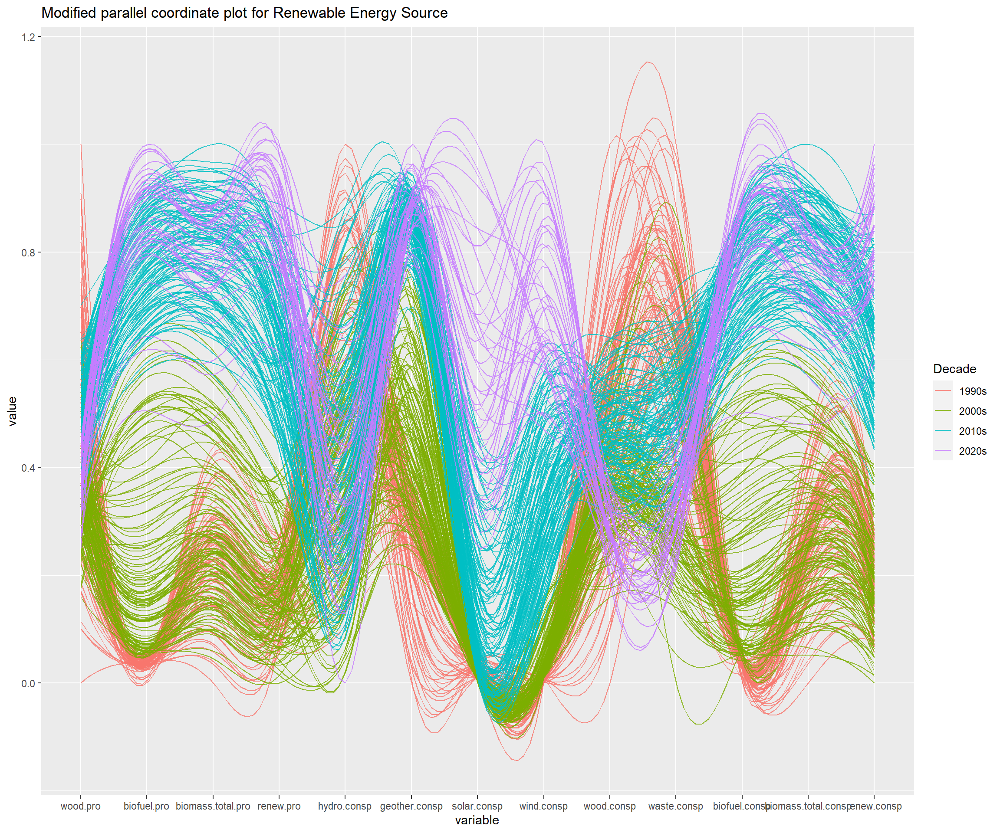
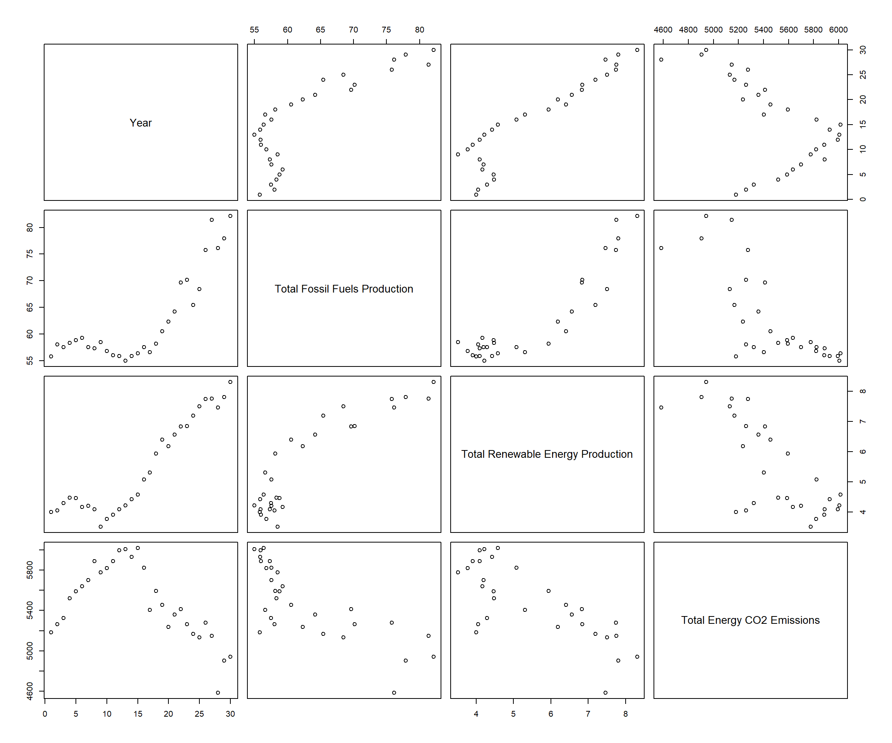

The data range of all data tables we use is from 1973.1 to 2023.8. However, due to the existence of missing values in early data and the large amount of total data, we mainly consider the data of the past thirty years, that is, the data from 1993 to 2023.
3.1Unveiling Energy Trends
Data Source: Utilize "Table_1.2" and "Table_1.3".
Techniques: Implement stacked histograms and time series analysis to depict consumption trends of different energy sources over time. Visualize shifts in energy consumption patterns, highlighting preferences across diverse energy sources.
Code
library(dplyr)
Attaching package: 'dplyr'
The following objects are masked from 'package:stats':
filter, lag
The following objects are masked from 'package:base':
intersect, setdiff, setequal, union
The following object is masked from 'package:tidyr':
smiths
Code
library(ggridges)library(plotly)
Attaching package: 'plotly'
The following object is masked from 'package:ggplot2':
last_plot
The following object is masked from 'package:stats':
filter
The following object is masked from 'package:graphics':
layout
Code
library(lubridate)
Attaching package: 'lubridate'
The following objects are masked from 'package:base':
date, intersect, setdiff, union
Firstly, based on Table_1.3, consumption values of various types of energy from January 1973 to August 2023 are obtainable. The average value is taken for each year, and data from the last thirty years are selected, specifically from 1993 to 2023.
There are two main categories of energy consumption: conventional energy, including Fossil Fuels such as coal, oil, and natural gas, and renewable energy, including wind, solar, and nuclear power. Utilizing a line graph, the annual average values of Fossil Energy Consumption, Renewable Energy Consumption, and Total Energy Consumption are depicted, revealing the overall changes in US energy consumption over the past thirty years.
Code
consumption_30y <-subset(consumption, year >=1993& year <=2023)consumption_30y_total <-subset(consumption_30y, select =c(1, 5, 12, 13))colnames(consumption_30y_total) <-c("Year", "Fossil", "Renewable", "Total")consumption_melted <-melt(consumption_30y_total, id.vars ="Year", variable.name ="Energy_Type", value.name ="Consumption")ggplot(consumption_melted, aes(x = Year, y = Consumption, color = Energy_Type, group = Energy_Type)) +geom_line(linewidth =1)
Code
labs(x ="Year", y ="Consumption", title ="Energy Consumption Trends Over Years")
From the graph, it’s evident that the total energy consumption in the US is still dominated by traditional Fossil fuels, while Renewable energy shows an upward trend since the late twentieth century.
As the total energy consumption in the United States continues to be predominantly reliant on traditional Fossil fuels, we will now focus on analyzing Fossil energy. Fossil energy primarily comprises three components: coal, petroleum, and natural gas.
Drawing a stacked histogram reveals the changing trends in US Fossil energy consumption over the past thirty years. Simultaneously, it depicts the proportions and trends of consumption for the three traditional energy sources.
Code
fossil <-subset(consumption_30y, select =c(1:4))colnames(fossil) <-c("Year", "Coal", "Gas", "Petroleum")fossil_melted <- fossil %>%pivot_longer(cols =-Year, names_to ="Fossil_Type", values_to ="Consumption")ggplot(fossil_melted, aes(x = Year, y = Consumption, fill = Fossil_Type)) +geom_bar(stat ="identity", position ="stack", width =0.7) +labs(x ="Year", y ="Consumption", title ="Fossil Fuel Consumption Over the Years") +theme_minimal()
From the graph, it’s evident that Petroleum constitutes the primary component of Fossil energy, and its consumption has remained relatively stable over the past thirty years. Following Petroleum is Gas, which has shown a steady increase in consumption year by year. The smallest proportion is attributed to Coal, which exhibits a declining consumption trend over the same period.
Lastly, we aim to investigate whether energy consumption is associated with seasonal variations, such as higher demands for heating during cold winters and increased cooling needs in hot summers, both leading to escalated energy consumption.
Code
ggplot(consp_date2, mapping =aes(x = Year, y = value, colour = TYPE)) +geom_line() +geom_point(size =1) +labs(x ="Month", y ="Energy Consumption", title ="Monthly Fossil Consumption Over Time") +facet_grid(~Month) +theme_minimal() +geom_smooth(se =FALSE)
`geom_smooth()` using method = 'loess' and formula = 'y ~ x'
Hence, employing time series analysis, we extracted the changes in Fossil fuel consumption over the past thirty years for each month.
The results from the graph indicate that in comparison to other months, Fossil fuel consumption is notably higher in December and January, as well as in July and August. This aligns with our assumptions regarding seasonal trends.
3.2Balancing Production and Consumption
Data Source: Utilize "Table_1.1".
Techniques: Utilize scatterplot and stacked histogram combined with a line chart to analyze the relationship between energy production growth and consumption trends. Visual representation showcasing alignment or divergence between production and consumption trends.
Our second inquiry aims to investigate the relationship between energy production and consumption. In theory, energy production should exceed or at least match energy consumption. We selected Table_1.1, which contains data on energy production, consumption, and related factors.
Initially, by plotting a scatter plot, we aimed to approximate the annual relationship between energy consumption and production from 1973 to the present. However, the results did not conform to the ‘production ≥ consumption’ relationship.
Code
prod.vs.consp$Year <-as.numeric(prod.vs.consp$Year)decade <- prod.vs.consp %>%mutate(Decade =case_when( Year >=1970& Year <=1979~"1970s", Year >=1980& Year <=1989~"1980s", Year >=1990& Year <=1999~"1990s", Year >=2000& Year <=2009~"2000s", Year >=2010& Year <=2019~"2010s", Year >=2020& Year <=2029~"2020s",TRUE~as.character(Year) ))plot_ly(decade, x =~Production, y =~Consumption,color =~as.factor(Decade), text=~Year,hoverinfo ='text')
No trace type specified:
Based on info supplied, a 'scatter' trace seems appropriate.
Read more about this trace type -> https://plotly.com/r/reference/#scatter
No scatter mode specifed:
Setting the mode to markers
Read more about this attribute -> https://plotly.com/r/reference/#scatter-mode
bar_plot <-ggplot(prod.vs.consp2_melted[prod.vs.consp2_melted$Type !="Consumption", ], aes(x = Year, y = Value, fill = Type)) +geom_bar(stat ="identity", position ="stack", width =0.7) +labs(x ="Year", y ="Value", title ="Comparison of Production and Consumption") +theme_minimal()
Code
line_plot <-ggplot(subset(prod.vs.consp2_melted, Type =="Consumption"), aes(x = Year, y = Value)) +geom_line(color ="#f15c5c") +labs(x ="Year", y ="Consumption")
Code
combined_plot <- bar_plot +geom_line(data = prod.vs.consp2_melted[prod.vs.consp2_melted$Type =="Consumption", ], aes(x = Year, y = Value, group =1), color ="#f15c5c",linewidth =1) +theme_minimal()
Consequently, we delved deeper into the dataset, considering that actual energy production should encompass energy imports and the consumption of energy stocks. Hence, we plotted a stacked histogram illustrating energy production, imports, and stock variation, comparing them with energy consumption.
Code
combined_plot
This analysis revealed that total production exceeds or matches consumption. Additionally, our observation indicated that over the past thirty years, the United States primarily relied on domestic energy production. Furthermore, the net energy import quantity in the US has shown a declining trend since the late twentieth century. In recent years, the net import quantity has turned negative, indicating that energy exports exceed energy imports.
3.3Price Dynamics and Supply-Demand
Data Source: Utilize "Table_9.1", "Table_9.10" and "Table_1.1".
Techniques: Employ boxplots, scatterplots, and heatmaps to illustrate price fluctuations and their correlation with supply-demand dynamics. Visual representations elucidating changes in price dynamics and their relationship with supply and demand shifts.
Our third inquiry focuses on investigating the correlation between energy prices and supply-demand dynamics. Primarily, we examine the price fluctuations of crude oil and natural gas.
Table_9.1 contains various crude oil prices, explained as follows:
Crude Oil Domestic First Purchase Price (Dom.1stPur): Initial cost for domestically produced crude oil purchased by local buyers, representing the first buyer’s price.
Free on Board Cost of Crude Oil Imports (FOB.Cost.Import): Price of crude oil at shipment, typically at the export port, covering its cost and expenses until loaded onto the ship.
Landed Cost of Crude Oil Imports (Landed.Cost.Import): Total cost of imported crude oil at the destination port, including FOB costs, duties, taxes, handling, and transportation.
Refiner Acquisition Cost of Crude Oil, Domestic (Ref.Acq.Cost.Dom): Cost for refiners purchasing domestically produced crude oil, encompassing expenses related to sourcing from domestic suppliers.
Refiner Acquisition Cost of Crude Oil, Imported (Ref.Acq.Cost.Imp): Expenses for refiners purchasing imported crude oil from international sources.
Refiner Acquisition Cost of Crude Oil, Composite (CompRef.Acq.Cost): Total cost for refiners purchasing both domestic and imported crude oil, presenting an overall cost considering a blend of sources.
Table_9.10 encompasses various natural gas prices, explained as follows:
Natural Gas Price, Citygate (Citygate): Cost of natural gas at urban distribution points.
Natural Gas Price, Delivered to Consumers, Residential (Custom.Resid): Cost of natural gas delivered to residential consumers.
Natural Gas Price, Delivered to Consumers, Commercial (Custom.Commer): Cost of natural gas delivered to commercial consumers or businesses.
Percentage of Commercial Sector Consumption for Which Price Data Are Available (Perc1): Percentage of commercial gas usage with available price data.
Natural Gas Price, Delivered to Consumers, Industrial (Custom.Industr): Cost of gas supplied to industries.
Percentage of Industrial Sector Consumption for Which Price Data Are Available (Perc2): Percentage of industrial gas usage with available price data.
Natural Gas Price, Electric Power Sector (Elec): Cost of gas supplied specifically to the power generation sector.
Firstly, we used boxplots to assess the approximate distribution of oil and gas prices, and combined them with line graphs to determine the price trends.
Code
ggplot(oil_price_y_melted, aes(x = Price_Type,y = Oil_Price)) +geom_boxplot() +ggtitle("Multiple boxplots of Oil Price") +labs(y ="Oil Price", x ="Price Type")
Code
ggplot(gas_price_y_melted, aes(x = Price_Type,y = Gas_Price)) +geom_boxplot() +ggtitle("Multiple boxplots of Gas Price") +labs(y ="Gas Price", x ="Price Type")
Code
ggplot(oil_price_y_melted, aes(x = Year, y = Oil_Price, color = Price_Type, group = Price_Type)) +geom_line(size =0.8) +geom_point(size =1) +labs(x ="Year", y ="Oil Price", title ="Oil Price Trends Over Years")
Warning: Using `size` aesthetic for lines was deprecated in ggplot2 3.4.0.
ℹ Please use `linewidth` instead.
Code
ggplot(gas_price_y_melted, aes(x = Year, y = Gas_Price, color = Price_Type, group = Price_Type)) +geom_line(size =0.8) +geom_point(size =1) +labs(x ="Year", y ="Gas Price", title ="Gas Price Trends Over Years")
From the graphs, it’s evident that different types of oil prices are close to each other and follow similar trends. There was a significant surge from 1993 to 2008, followed by fluctuations after 2008.
As for gas prices, various types exhibit similar changing patterns, witnessing a substantial increase from 1993 to 2008. However, there’s a noticeable difference in the values of different prices. Among these, the price of gas delivered to residential users is the highest. Possible reasons for this include:
Residential users typically have a stable and indispensable demand for natural gas, particularly for heating and cooking. This relatively fixed demand allows natural gas suppliers to set relatively higher prices.
Supplying natural gas to residential areas may involve more pipelines and infrastructure, with additional logistics and investment costs that might be factored into user prices.
Providing natural gas services to residential users might require more service support and guarantees, such as ensuring continuous supply and handling emergency situations. These additional services might contribute to the increased prices.
Next, we aim to investigate whether the prices of oil and gas, being primary energy sources, are influenced by the supply and demand of energy.
We selected energy production, energy imports, and changes in energy stock as energy supply indicators. For oil prices, considering the close resemblance among the six types of oil prices, we opted to use the average of these six prices as the representative oil price. Concerning gas prices, we chose the initial price, specifically the price at the urban distribution point, as our reference.
We aim to construct a scatter plot to explore the relationship between energy supply, energy consumption, oil price, and gas price.
From the graph, it’s evident that there’s an unmistakable linear relationship between supply and consumption. The prices of oil and gas show a proportional correlation with the supply and demand of energy.
ggplot(total_price_pro_consp, aes(Supply, Oil_Price)) +geom_hex() +ggtitle("Energy Supply vs Oil Price")
Code
ggplot(total_price_pro_consp, aes(Consumption, Oil_Price)) +geom_hex() +ggtitle("Energy Demand vs Oil Price")
Code
ggplot(total_price_pro_consp, aes(Supply, `Natural.Gas.Price,.Citygate`)) +geom_hex() +ggtitle("Energy Supply vs Gas Price")
Code
ggplot(total_price_pro_consp, aes(Consumption, `Natural.Gas.Price,.Citygate`)) +geom_hex() +ggtitle("Energy Demand vs Gas Price")
Creating a heatmap depicting the relationship between monthly energy supply and demand along with oil and gas prices, we observe that the energy supply and demand are concentrated around the 7th and 8th months, coinciding with gas prices concentrated between 2.5 and 6.
In contrast, the heatmap depicting the relationship between oil price and supply and demand doesn’t show a clear trend. This might be due to significant fluctuations in oil prices over the last thirty years. There are likely other factors that exert a more significant influence on oil prices, such as political factors, resulting in the lack of a distinct trend in the heatmap.
3.4 Renewable Energy’s impact on Conventional Sources
Data Source: Utilize "Table_10.1", "Table_1.2" and "Table_1.3" from the dataset.
Techniques: Utilize parallel coordinate plots to compare the increasing share of renewables with traditional energy sources. Visual elucidation of potential substitution effects between renewable and conventional sources..
Code
library(GGally)
Registered S3 method overwritten by 'GGally':
method from
+.gg ggplot2
── Conflicts ────────────────────────────────────────── tidyverse_conflicts() ──
✖ plotly::filter() masks dplyr::filter(), stats::filter()
✖ dplyr::lag() masks stats::lag()
ℹ Use the conflicted package (<http://conflicted.r-lib.org/>) to force all conflicts to become errors
We are concerned about the trend over years, not the trend within years, so to further reduce the number of data points we have, we will sum up the months to get yearly energy production and consumption.
Code
energy$Year <-format(energy$Month,"%Y")yearlyenergy <- energy |>group_by(Year) |>summarise(across(where(is.numeric), sum))
We try to draw a parallel coordinate plot with the fossil fuels vs renewable energy consumption and production.
Code
energy_t <-data.frame(t(yearlyenergy[-1]))colnames(energy_t) <-as.character(yearlyenergy$Year)energy_t <- energy_t[c(1, 3, 9, 11), ]energy_t$type <-word(rownames(energy_t), -1)ggparcoord(energy_t, columns =1:(ncol(energy_t)-1), groupColumn ='type', scale ="globalminmax", alpha=1.0,) +labs(title ="Fossil Fuels vs Renewable Energy Consumption and Production") +xlab("Time") +ylab("Type")
We can see that fossil fuels consumption decreased while the production increased. The consumption and production of renewable energy is increases over the years, but it is hard to say whether it affects that of fossil fuels, as it is only a small amount. In order to see more clearly the relationship, we decide to turn the production and consumption into proportion of total energy production and consumption, and compare the production and consumption separately.
Code
yearlyenergy$`Scaled Fossil Fuels Production`<- yearlyenergy$`Total Fossil Fuels Production`/ yearlyenergy$`Total Primary Energy Production`yearlyenergy$`Scaled Nuclear Electric Power Production`<- yearlyenergy$`Nuclear Electric Power Production`/ yearlyenergy$`Total Primary Energy Production`yearlyenergy$`Scaled Renewable Energy Production`<- yearlyenergy$`Total Renewable Energy Production`/ yearlyenergy$`Total Primary Energy Production`production <-data.frame(t(yearlyenergy[, c("Scaled Fossil Fuels Production", "Scaled Renewable Energy Production", "Scaled Nuclear Electric Power Production")]))colnames(production) <-as.character(yearlyenergy$Year)production$Types <-rownames(production)production <- production |>pivot_longer(cols =1:(ncol(production)-1), names_to ="Time", values_to ="Production")ggplot(production,aes(x =as.factor(Time), stratum = Types, alluvium = Types, y = Production,fill = Types, label = Types))+geom_stratum(alpha = .5)+geom_alluvium()+geom_text(stat ="stratum", size =3)
Code
yearlyenergy$`Scaled Fossil Fuels Consumption`<- yearlyenergy$`Total Fossil Fuels Consumption`/ yearlyenergy$`Total Primary Energy Consumption`yearlyenergy$`Scaled Nuclear Electric Power Consumption`<- yearlyenergy$`Nuclear Electric Power Consumption`/ yearlyenergy$`Total Primary Energy Consumption`yearlyenergy$`Scaled Renewable Energy Consumption`<- yearlyenergy$`Total Renewable Energy Consumption`/ yearlyenergy$`Total Primary Energy Consumption`consumption <-data.frame(t(yearlyenergy[, c("Scaled Fossil Fuels Consumption", "Scaled Renewable Energy Consumption", "Scaled Nuclear Electric Power Consumption")]))colnames(consumption) <-as.character(yearlyenergy$Year)consumption$Types <-rownames(consumption)consumption <- consumption |>pivot_longer(cols =1:(ncol(consumption)-1), names_to ="Time", values_to ="Consumption")ggplot(consumption,aes(x =as.factor(Time), stratum = Types, alluvium = Types, y = Consumption,fill = Types, label = Types))+geom_stratum(alpha = .5)+geom_alluvium()+geom_text(stat ="stratum", size =3)
Now we can see that fossil fuel production does not show a decreasing trend as renewable energy production increase. However, the consumption of both does seem to have a negative correlation.
Code
renew_m <-read.xlsx("Table_10.1_Renewable_Energy_Production_and_Consumption_by_Source.xlsx")renew_m$Month <-as.Date(renew_m$Month, origin ="1899-12-30")renew_m <-subset(renew_m, Month >='1993-01-01')colnames(renew_m) <-c("Month", "wood.pro", "biofuel.pro", "biomass.total.pro", "renew.pro", "hydro.consp", "geother.consp", "solar.consp", "wind.consp", "wood.consp", "waste.consp", "biofuel.consp", "biomass.total.consp", "renew.consp")# get the annual valuerenew_m$Year <-substr(renew_m$Month, 1, 4)renew <- renew_m %>%group_by(Year) %>%summarise(across(-Month, mean))renew_m <- renew_m %>%mutate(Decade =case_when( Year >=1970& Year <=1979~"1970s", Year >=1980& Year <=1989~"1980s", Year >=1990& Year <=1999~"1990s", Year >=2000& Year <=2009~"2000s", Year >=2010& Year <=2019~"2010s", Year >=2020& Year <=2029~"2020s",TRUE~as.character(Year) ))
The types of new energy include wood, biofuel, geothermal, solar, hydro, and wind power. Next, we aim to utilize a parallel coordinate plot to explore the proportions of these new energy types and their trends over time.
Code
ggparcoord(renew_m, columns=2:14, groupColumn=16, alpha=0.8, scale='uniminmax', splineFactor=10, title ="Modified parallel coordinate plot for Renewable Energy Source")

From the graph, it’s evident that there are significant differences in the distribution of various new energy types between different eras. Overall, after 2010, both the production and consumption of new energy surpassed the levels from 1990 to 2010.
From the perspective of different new energy types, after 2010 compared to the period between 1990 and 2010, there has been an increase in the production and consumption of geothermal, solar, and biomass energy. This discovery aligns with our understanding of technological progress.
Additionally, there has been a decrease in the consumption of wood and waste. The likely reason for this reduction is that the primary method of energy production from wood and waste involves combustion processes that generate a significant amount of carbon dioxide. Consequently, these methods of producing energy from wood and waste are gradually being replaced.
The following code is used to generate the dataset used for the interactive plot.
Code
consumption <- yearlyenergy[, c("Year", "Total Fossil Fuels Consumption", "Nuclear Electric Power Consumption", "Total Renewable Energy Consumption")]consumption <- consumption |>pivot_longer(cols =2:4, names_to ="Type", values_to ="Consumption")consumption_scaled <- yearlyenergy[, c("Year", "Scaled Fossil Fuels Consumption", "Scaled Renewable Energy Consumption", "Scaled Nuclear Electric Power Consumption")]colnames(consumption_scaled) <-c("Year", "Total Fossil Fuels Consumption", "Nuclear Electric Power Consumption", "Total Renewable Energy Consumption")yearlyconsumption <- consumption_scaled |>pivot_longer(cols =2:4, names_to ="Type", values_to ="Scaled Consumption") |>right_join(consumption, by =c("Year", "Type"))yearlyconsumption_sorted <- yearlyconsumption |>arrange(Type %in%c("Total Renewable Energy Consumption", "Nuclear Electric Power Consumption", "Total Fossil Fuels Consumption"), Type)yearlyconsumption_sorted$Consumption <-format(yearlyconsumption_sorted$Consumption, digits =5)yearlyconsumption_sorted$`Scaled Consumption`<-format(yearlyconsumption_sorted$`Scaled Consumption`, digits =5)write.csv(yearlyconsumption_sorted, "Yearly Consumption.csv", row.names=FALSE)
3.5Carbon Emissions and Energy Mix
Data Source: Utilize "Table_11.1".
Techniques: Implement scatterplots and stacked area chart to establish correlations between energy sources and U.S. carbon emissions. Visual representations showcasing the relationship between energy sources and carbon emissions, highlighting the impact of renewable integration on reducing the carbon footprint.
Again, we are only concerned with the most recent 30 years, and we consider the yearly total.
energycarbon <- yearlyenergy |>select(Year, `Total Fossil Fuels Production`, `Total Renewable Energy Production`) |>left_join(select(yearlycarbon, Year, `Total Energy CO2 Emissions`), by ='Year')plot(energycarbon)

Production for both fossil fuel and renewable energy seem to display a negative correlation with \(CO_2\) emissions, but from the plot with year, it looks like this is just due to increasing trend of production and decreasing trend in \(CO_2\) emission.
Code
energycarbon <- yearlyenergy |>select(Year, `Total Fossil Fuels Consumption`, `Total Renewable Energy Consumption`) |>left_join(select(yearlycarbon, Year, `Total Energy CO2 Emissions`), by ='Year')plot(energycarbon)
On the other hand, fossil fuel consumption and \(CO_2\) emission shows the exact same trend over time, and they have very high correlation. This shows that lower fossil fuel consumption is accompanied by lower \(CO_2\) emission.
We finally aimed to investigate which type of energy production emits the most carbon dioxide, providing directions for future changes in the energy structure.
We created a stacked area plot to display the proportion of CO2 emissions from each energy production. From this, it’s evident that traditional energy sources, namely coal, petroleum, and natural gas, remain the primary contributors to CO2 emissions. Surprisingly, Motor Gasoline and Distillate Fuel Oil also represent a significant proportion, which is quite striking.